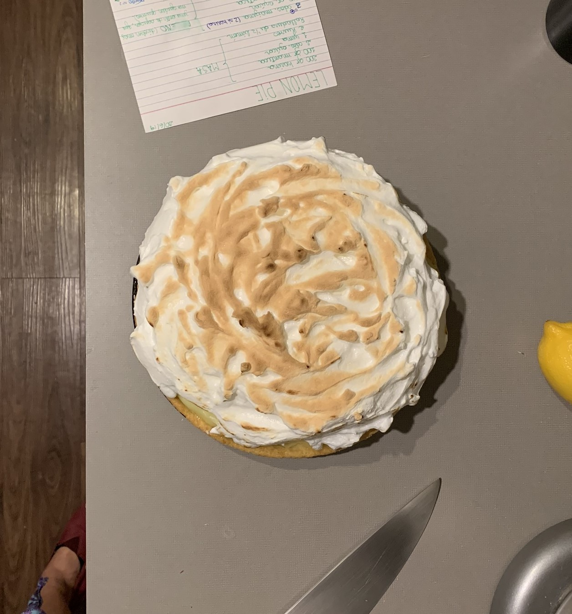

Merengue Italiano
Italian meringue is an easy topping for any dessert. There are a lot of
tips and myths behind it, but here is what you need to know.
Mica’s Notes:
- Use a scale
-
Eggs: Make sure there is no yolk in the egg whites. It’s easier to
separate white and yolk when the eggs are cold, but try to use fresh
eggs. Room temperature eggs form faster, but a strong mixer can handle
cold eggs too.
-
Make sure your mixer’s bowl and wire whip are completely free of any
fat by cleaning with pure alcohol and a paper towel or cloth.
-
Urban myth: Adding salt makes meringue form faster but can destabilize
it later.
-
Add an acid to stabilize your meringue, such as 1/4 teaspoon of cream
of tartar or a few drops of lemon juice for a shinier meringue.
- Meringue doesn’t last more than two days in the fridge.
Lemon Pie - Italian Meringue Ingredients
-
Egg whites (around 35 grams per large egg). Most recipes won’t require
more than 3 egg whites.
-
Sugar, twice as much as egg whites (e.g., for 3 egg whites or 105
grams, use 210 grams of sugar)
- Water, the same amount in grams as sugar (e.g., 210 grams)
- A few drops of lemon juice or 1/4 teaspoon of cream of tartar
Procedure
-
Separate the egg whites, weigh them, and add lemon juice drops or
cream of tartar.
-
Prepare the syrup by adding twice as much water as egg whites and then
twice as much sugar in a pot. Avoid any sugar on the pot's walls.
Place on medium-high heat without stirring.
-
If you have a thermometer, check for 240°F, or wait around 10 minutes
before mixing egg whites. The egg whites should have some volume
before adding the syrup.
-
When the syrup reaches 245°F or “ballpoint” (able to form a small ball
with your hands), it’s ready to add to the egg whites.
- Pour the syrup on the egg whites slowly, like a thread.
-
Mix until the meringue is bright and smooth, which can take up to 20
minutes.
Reference video: Isabela Vermal’s “ABC of Italian Meringue”